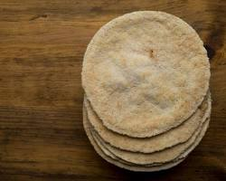

The Power of Cassava Bread
Cassava bread is a gluten-free, fiber-rich alternative to traditional bread. Made from the root of the cassava plant, it offers sustainable energy, supports digestion, and promotes overall well-being. Below, explore the essential nutrients that make cassava bread a smart choice.

Key Nutritional Benefits
- Gluten-Free: Ideal for individuals with celiac disease or gluten intolerance.
- Rich in Carbohydrates: Provides long-lasting energy without quick sugar spikes.
- High in Fiber: Aids digestion and promotes gut health.
- Low in Fat: A heart-friendly food option.
- Source of Vitamins: Includes vitamin C, folate, and potassium.